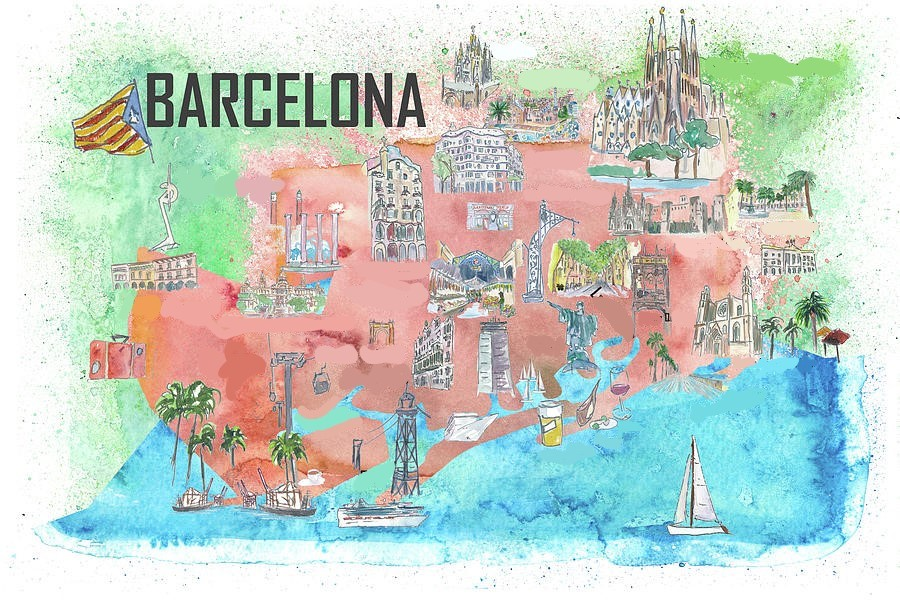

The "Basílica i Temple Expiatori de la Sagrada Família",
in English ('Basilica of the Holy Family'), is a church in the Eixample district
of Barcelona, Catalonia, Spain, and is currently the largest unfinished Catholic
church in the world. Designed by the Catalan architect Antoni Gaudí (1852–1926),
his work on Sagrada Família is part of a UNESCO World Heritage Site. On 7
November 2010, Pope Benedict XVI consecrated the church and proclaimed it a
minor basilica.
On 19 March 1882, construction of the Sagrada Família began under architect
Francisco de Paula del Villar. In 1883, when Villar resigned, Gaudí took over as
chief architect, transforming the project with his architectural and engineering
style, combining Gothic and curvilinear Art Nouveau forms. Gaudí devoted the
remainder of his life to the project, and he is buried in the church's crypt. At
the time of his death in 1926, less than a quarter of the project was complete.
Relying solely on private donations, the Sagrada Família's construction
progressed slowly and was interrupted by the Spanish Civil War. In July 1936,
anarchists from the FAI set fire to the crypt and broke their way into the
workshop, partially destroying Gaudí's original plans, drawings and plaster
models, which led to 16 years of work to piece together the fragments of the
master model.
Construction resumed to intermittent progress in the 1950s. Advancements in
technologies such as computer aided design and computerised numerical control
(CNC) have since enabled faster progress and construction passed the midpoint in
2010. However, some of the project's greatest challenges remain, including the
construction of ten more spires, each symbolising an important Biblical figure
in the New Testament. It was anticipated that the building would be completed by
2026, the centenary of Gaudí's death, but this has now been delayed due to the
COVID-19 pandemic.
Site:
Sagrada Família -
Wikipedia
